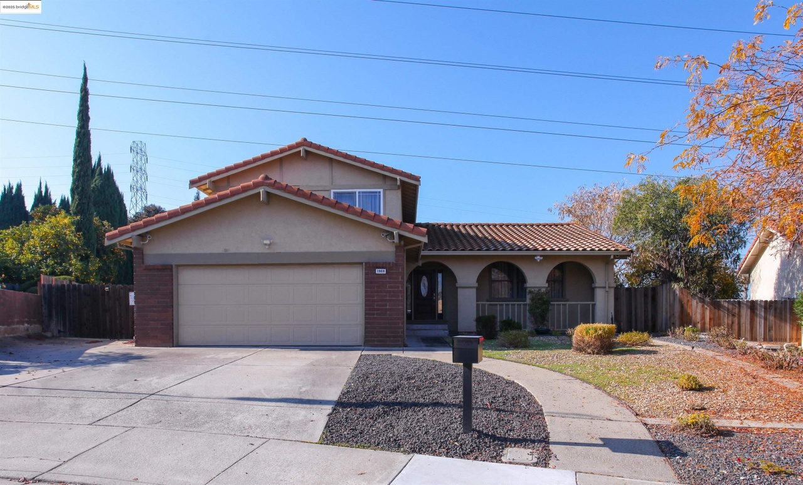
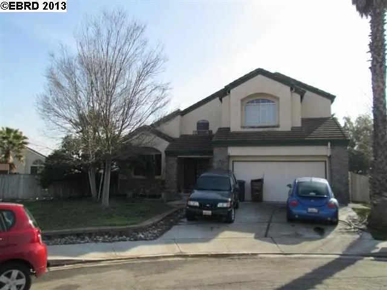
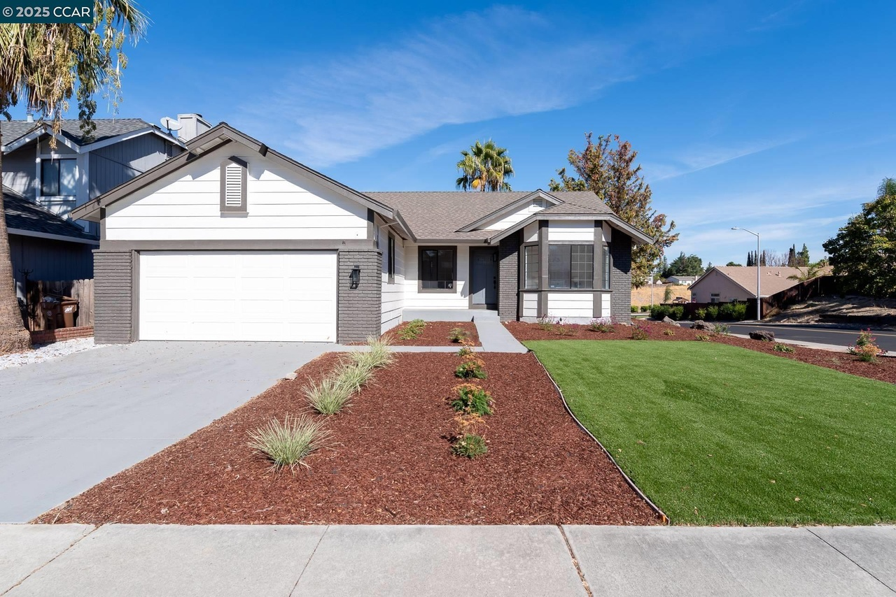
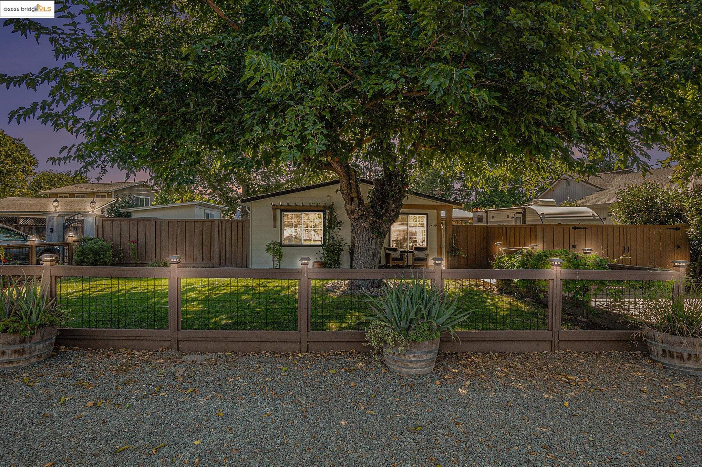
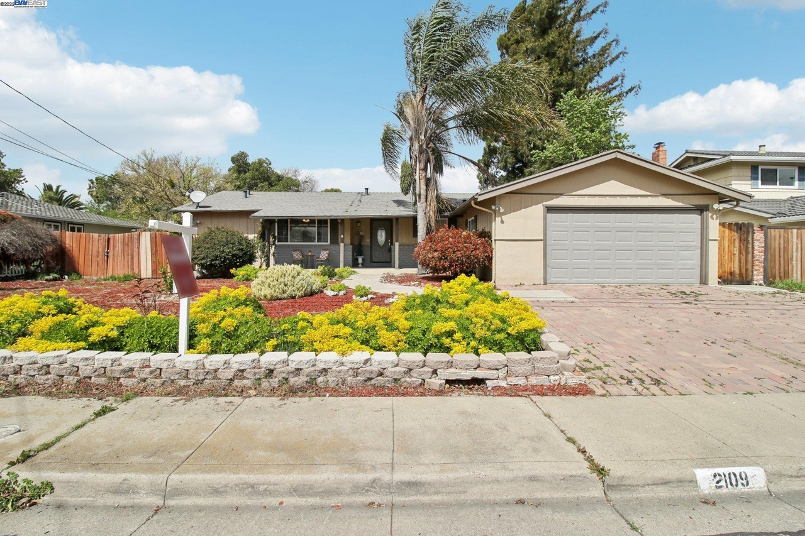
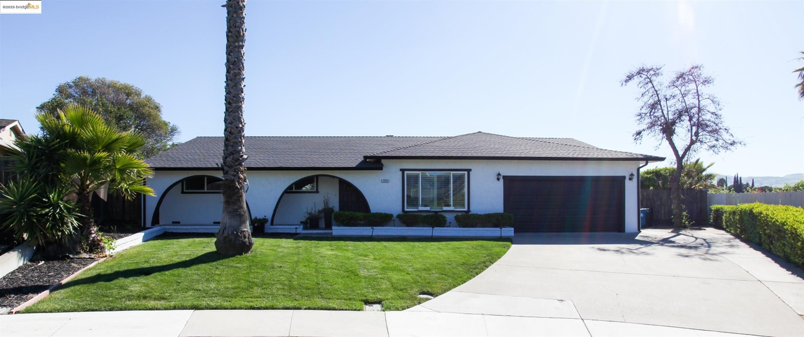

Buyer GuideBuying a Home in the East Bay: A Practical Start-to-Finish Guide
A practical guide to budgeting, preapproval, home search, inspections, contingencies, escrow and closing for East Bay home buyers.
Practical articles for buyers, sellers, landlords, tenants and real estate investors—written to answer the questions people search for most.

Buyer GuideA practical guide to budgeting, preapproval, home search, inspections, contingencies, escrow and closing for East Bay home buyers.

Discovery BayWhat buyers and sellers should consider when evaluating homes in Discovery Bay, including waterfront features, insurance, maintenance and resale.

BrentwoodA buyer-focused guide to Brentwood homes, neighborhoods, commute considerations, property condition and long-term ownership planning.

Property ManagementEducational overview of rental pricing, screening, leases, deposits, repairs, notices and recordkeeping for California rental-property owners.

InvestingLearn how to evaluate rent, vacancy, expenses, financing, reserves, cash flow and risk before purchasing an East Bay rental property.

First-Time BuyersA straightforward checklist for California first-time buyers covering credit, cash, preapproval, inspections, closing costs and ownership reserves.
Understand how mortgage rates, loan amount, taxes, insurance and other costs affect the monthly payment shown by a mortgage calculator.
Visit the city guides for Discovery Bay, Brentwood, Oakley, Antioch, Pittsburg, Concord, Bay Point, Byron and Walnut Creek.